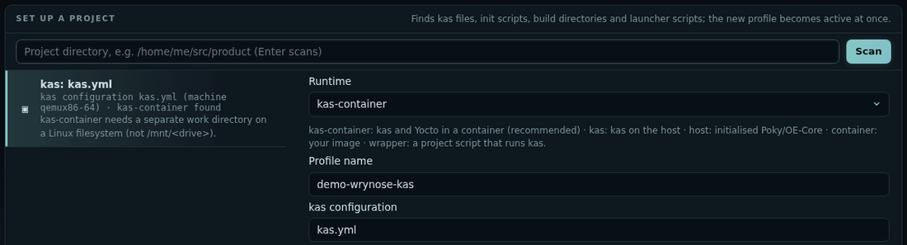
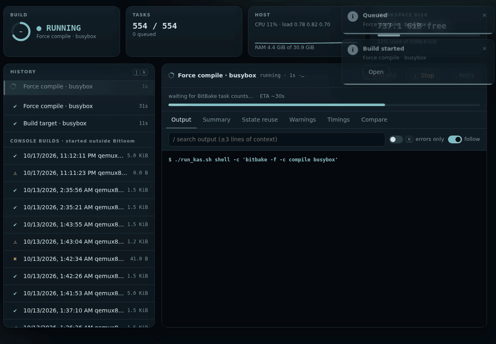

Quickstart
From nothing to a build you can follow in the browser, in five steps. Every step also works in the terminal UI; the two share one build service.
1. Install#
Download the version you want from GitHub Releases (replace 1.2.3):
sudo apt install ./bitloom_1.2.3_all.deb # Debian / Ubuntu: dependencies included
On other distributions and WSL2, install the source archive in a virtual environment:
tar -xzf bitloom-1.2.3.tar.gz && cd bitloom-1.2.3
python3 -m venv ~/.bitloom-venv && ~/.bitloom-venv/bin/pip install .
Check the result with bitloom --version. Real builds also need what your project uses: kas or kas-container with Docker or Podman, or an initialised Poky checkout. See installation for checksums and the release SBOM.
2. Look around on the samples#
bitloom --web --demo
Bitloom prints the dashboard URL, which carries its access token, and opens your browser. The demo has a Scarthgap and a Wrynose sample workspace: switch between them with the profile menu. Press ? for the keys, Ctrl+K for the palette, 1 to 6 for the sections. Nothing here runs a real build.
3. Connect your project#
Start Bitloom from your project folder:
cd ~/src/my-product
bitloom --web
With no profile yet, the dashboard opens Configuration → Set up a project on that folder and proposes how it builds, with the evidence it found:
| Your project has | Bitloom proposes |
|---|---|
kas files (kas/*.yml) |
a kas-container profile per configuration, with a work directory on a Linux filesystem |
a launcher script that runs kas, used as YML=kas/board.yml ./run_kas.sh build |
a wrapper profile per product; BitBake commands run as ./run_kas.sh shell -c '…', and the build folder comes from the script's KAS_WORK_DIR |
| a Poky or OE-Core checkout | a host profile that sources oe-init-build-env |
Animation Guided setup on a launcher project with two products

Pick a proposal, check the fields (each is explained and checked as you type) and press Save. When one launcher builds several products, Save all products creates one profile each. Details: Projects and guided setup.
4. Build and follow#
- In Builds (
1), click the target field or presst: it lists the image recipes found in your layers, the kas target and the images already built first. Any recipe works too. - Press
b(or Build). The job appears at the top of the history, with live output, progress and an ETA. - When it ends, Summary (
u) groups errors, warnings and failed tasks; Compare (d) shows what changed since the previous run. A failed build's summary starts with a diagnosis of the real cause: the failed task, its log, the lines that matter and the next step. - Operations (
q) queues any of the 74 operations: one recipe's compile, a clean, a dry run, an SDK, an SBOM or CVE check.
Animation A real force compile of busybox followed live, then its summary

Close the browser whenever you like: the build service keeps the queue and the history, and bitloom --web reconnects. Optional notifications tell you when a build ends (Daily helpers).
5. The same, in the terminal#
bitloom
Opens the terminal UI on the same service, profiles and history: useful over SSH. Numbers open sections, letters act, / searches, ? lists every key, P switches profile. See the keyboard reference.
Where next#
- Web dashboard: every section, notifications, the API.
- SBOM, CRA and releases: SBOM quality, vulnerabilities and their exports, CRA readiness.
- Studio: your own layer, distribution, machine, image or recipe, explained field by field.
- User guide: profiles and runtimes, caches, analysis, troubleshooting.
- Teams and CI/CD: headless
--ciruns, team profiles, launcher scripts in depth.